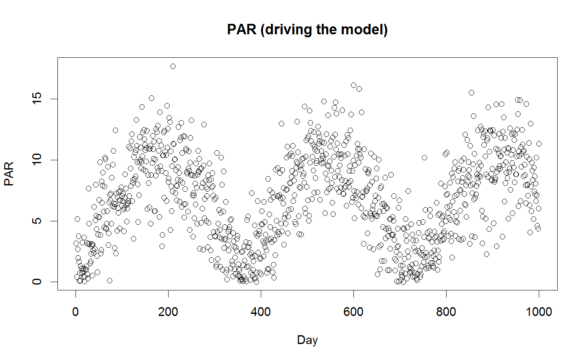
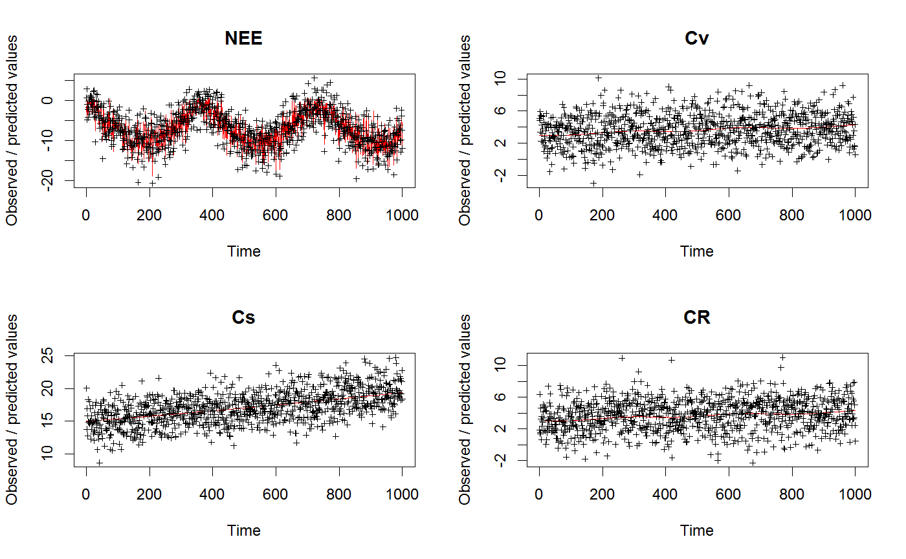

A very simple ecosystem model, based on three carbon pools and a basic LUE model
VSEM(pars = c(KEXT = 0.5, LAR = 1.5, LUE = 0.002, GAMMA = 0.4, tauV = 1440, tauS = 27370, tauR = 1440, Av = 0.5, Cv = 3, Cs = 15, Cr = 3), PAR, C = TRUE)
| pars | a parameter vector with parameters and initial states |
|---|---|
| PAR | Forcing, photosynthetically active radiation (PAR) MJ /m2 /day |
| C | switch to choose whether to use the C or R version of the model. C is much faster. |
a matrix with colums NEE, CV, CR and CS units and explanations see details
This Very Simple Ecosystem Model (VSEM) is a 'toy' model designed to be very simple but yet bear some resemblance to deterministic processed based ecosystem models (PBMs) that are commonly used in forest modelling.
The model determines the accumulation of carbon in the plant and soil from the growth of the plant via photosynthesis and senescence to the soil which respires carbon back to the atmosphere.
The model calculates Gross Primary Productivity (GPP) using a very simple light-use efficiency (LUE) formulation multiplied by light interception. Light interception is calculated via Beer's law with a constant light extinction coefficient operating on Leaf Area Index (LAI).
A parameter (GAMMA) determines the fraction of GPP that is autotrophic respiration. The Net Primary Productivity (NPP) is then allocated to above and below-ground vegetation via a fixed allocation fraction. Carbon is lost from the plant pools to a single soil pool via fixed turnover rates. Heterotropic respiration in the soil is determined via a soil turnover rate.
The model equations are
-- Photosynthesis $$LAI = LAR*Cv$$ $$GPP = PAR * LUE * (1 - \exp^{(-KEXT * LAI)})$$ $$NPP = (1-GAMMA) * GPP$$
-- State equations $$dCv/dt = Av * NPP - Cv/tauV$$ $$dCr/dt = (1.0-Av) * NPP - Cr/tauR$$ $$dCs/dt = Cr/tauR + Cv/tauV - Cs/tauS$$
The model time-step is daily.
-- VSEM inputs:
PAR Photosynthetically active radiation (PAR) MJ /m2 /day
-- VSEM parameters:
KEXT Light extinction coefficient m2 ground area / m2 leaf area
LAR Leaf area ratio m2 leaf area / kg aboveground vegetation
LUE Light-Use Efficiency (kg C MJ-1 PAR)
GAMMA Autotrophic respiration as a fraction of GPP
tauV Longevity of aboveground vegetation days
tauR Longevity of belowground vegetation days
tauS Residence time of soil organic matter d
-- VSEM states:
Cv Above-ground vegetation pool kg C / m2
Cr Below-ground vegetation pool kg C / m2
Cs Carbon in organic matter kg C / m2
-- VSEM fluxes:
G Gross Primary Productivity kg C /m2 /day
NPP Net Primary Productivity kg C /m2 /day
NEE Net Ecosystem Exchange kg C /m2 /day
VSEMgetDefaults, VSEMcreatePAR, , VSEMcreateLikelihood
## This example shows how to run and calibrate the VSEM model library(BayesianTools) # Create input data for the model PAR <- VSEMcreatePAR(1:1000) plot(PAR, main = "PAR (driving the model)", xlab = "Day")# load reference parameter definition (upper, lower prior) refPars <- VSEMgetDefaults() # this adds one additional parameter for the likelihood standard deviation (see below) refPars[12,] <- c(2, 0.1, 4) rownames(refPars)[12] <- "error-sd" head(refPars)#> best lower upper #> KEXT 0.500 2e-01 1e+00 #> LAR 1.500 2e-01 3e+00 #> LUE 0.002 5e-04 4e-03 #> GAMMA 0.400 2e-01 6e-01 #> tauV 1440.000 5e+02 3e+03 #> tauS 27370.000 4e+03 5e+04# create some simulated test data # generally recommended to start with simulated data before moving to real data referenceData <- VSEM(refPars$best[1:11], PAR) # model predictions with reference parameters referenceData[,1] = 1000 * referenceData[,1] # this adds the error - needs to conform to the error definition in the likelihood obs <- referenceData + rnorm(length(referenceData), sd = refPars$best[12]) oldpar <- par(mfrow = c(2,2)) for (i in 1:4) plotTimeSeries(observed = obs[,i], predicted = referenceData[,i], main = colnames(referenceData)[i])# Best to program in a way that we can choose easily which parameters to calibrate parSel = c(1:6, 12) # here is the likelihood likelihood <- function(par, sum = TRUE){ # set parameters that are not calibrated on default values x = refPars$best x[parSel] = par predicted <- VSEM(x[1:11], PAR) # replace here VSEM with your model predicted[,1] = 1000 * predicted[,1] # this is just rescaling diff <- c(predicted[,1:4] - obs[,1:4]) # difference betweeno observed and predicted # univariate normal likelihood. Note that there is a parameter involved here that is fit llValues <- dnorm(diff, sd = x[12], log = TRUE) if (sum == FALSE) return(llValues) else return(sum(llValues)) } # optional, you can also directly provide lower, upper in the createBayesianSetup, see help prior <- createUniformPrior(lower = refPars$lower[parSel], upper = refPars$upper[parSel], best = refPars$best[parSel]) bayesianSetup <- createBayesianSetup(likelihood, prior, names = rownames(refPars)[parSel]) # settings for the sampler, iterations should be increased for real applicatoin settings <- list(iterations = 2000, nrChains = 2) out <- runMCMC(bayesianSetup = bayesianSetup, sampler = "DEzs", settings = settings)#> Running DEzs-MCMC, chain 1 iteration 300 of 2001 . Current logp -8624.918 -8592.876 -8588.121 . Please wait! Running DEzs-MCMC, chain 1 iteration 600 of 2001 . Current logp -8532.735 -8537.345 -8515.801 . Please wait! Running DEzs-MCMC, chain 1 iteration 900 of 2001 . Current logp -8519.858 -8525.309 -8515.801 . Please wait! Running DEzs-MCMC, chain 1 iteration 1200 of 2001 . Current logp -8506.742 -8506.346 -8515.801 . Please wait! Running DEzs-MCMC, chain 1 iteration 1500 of 2001 . Current logp -8504.459 -8506.262 -8501.071 . Please wait! Running DEzs-MCMC, chain 1 iteration 1800 of 2001 . Current logp -8505.372 -8499.451 -8500.069 . Please wait! Running DEzs-MCMC, chain 1 iteration 2001 of 2001 . Current logp -8503.789 -8499.372 -8498.692 . Please wait!#>#> Running DEzs-MCMC, chain 2 iteration 300 of 2001 . Current logp -8507.99 -8534.268 -8518.524 . Please wait! Running DEzs-MCMC, chain 2 iteration 600 of 2001 . Current logp -8504.173 -8511.363 -8503.835 . Please wait! Running DEzs-MCMC, chain 2 iteration 900 of 2001 . Current logp -8497.267 -8502.677 -8497.848 . Please wait! Running DEzs-MCMC, chain 2 iteration 1200 of 2001 . Current logp -8497.805 -8502.279 -8497.848 . Please wait! Running DEzs-MCMC, chain 2 iteration 1500 of 2001 . Current logp -8496.634 -8497.897 -8497.356 . Please wait! Running DEzs-MCMC, chain 2 iteration 1800 of 2001 . Current logp -8499.464 -8498.916 -8497.375 . Please wait! Running DEzs-MCMC, chain 2 iteration 2001 of 2001 . Current logp -8499.549 -8500.452 -8499.336 . Please wait!#># NOT RUN { plot(out) summary(out) marginalPlot(out, scale = T) gelmanDiagnostics(out) # should be below 1.05 for all parameters to demonstrate convergence # Posterior predictive simulations # Create a prediction function createPredictions <- function(par){ # set the parameters that are not calibrated on default values x = refPars$best x[parSel] = par predicted <- VSEM(x[1:11], PAR) # replace here VSEM with your model return(predicted[,1] * 1000) } # Create an error function createError <- function(mean, par){ return(rnorm(length(mean), mean = mean, sd = par[7])) } # plot prior predictive distribution and prior predictive simulations plotTimeSeriesResults(sampler = out, model = createPredictions, observed = obs[,1], error = createError, prior = TRUE, main = "Prior predictive") # plot posterior predictive distribution and posterior predictive simulations plotTimeSeriesResults(sampler = out, model = createPredictions, observed = obs[,1], error = createError, main = "Posterior predictive") ######################################################## # Demonstrating the updating of the prior from old posterior # Note that it is usually more exact to rerun the MCMC # with all (old and new) data, instead of updating the prior # because likely some information is lost when approximating the # Posterior by a multivariate normal settings <- list(iterations = 5000, nrChains = 2) out <- runMCMC(bayesianSetup = bayesianSetup, sampler = "DEzs", settings = settings) plot(out) correlationPlot(out, start = 1000) newPrior = createPriorDensity(out, method = "multivariate", eps = 1e-10, lower = refPars$lower[parSel], upper = refPars$upper[parSel], start= 1000) bayesianSetup <- createBayesianSetup(likelihood = likelihood, prior = newPrior, names = rownames(refPars)[parSel] ) # check boundaries are correct set bayesianSetup$prior$sampler() < refPars$lower[parSel] bayesianSetup$prior$sampler() > refPars$upper[parSel] # check prior looks similar to posterior x = bayesianSetup$prior$sampler(2000) correlationPlot(x, thin = F) out <- runMCMC(bayesianSetup = bayesianSetup, sampler = "DEzs", settings = settings) plot(out) correlationPlot(out) plotTimeSeriesResults(sampler = out, model = createPredictions, observed = obs[,1], error = createError, prior = F, main = "Posterior predictive") plotTimeSeriesResults(sampler = out, model = createPredictions, observed = obs[,1], error = createError, prior = T, main = "Prior predictive") # }par(oldpar)